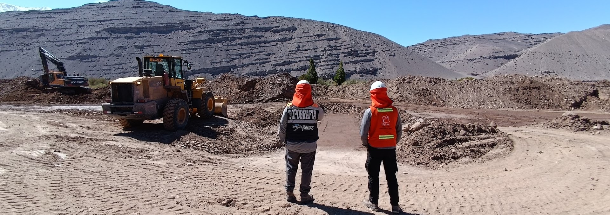
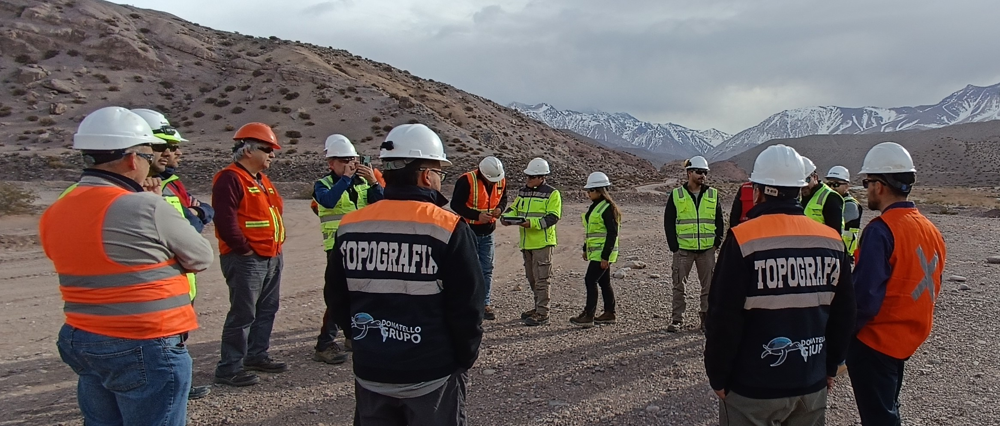
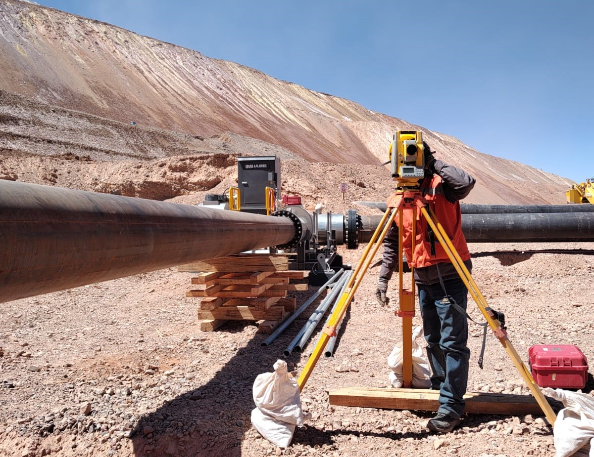
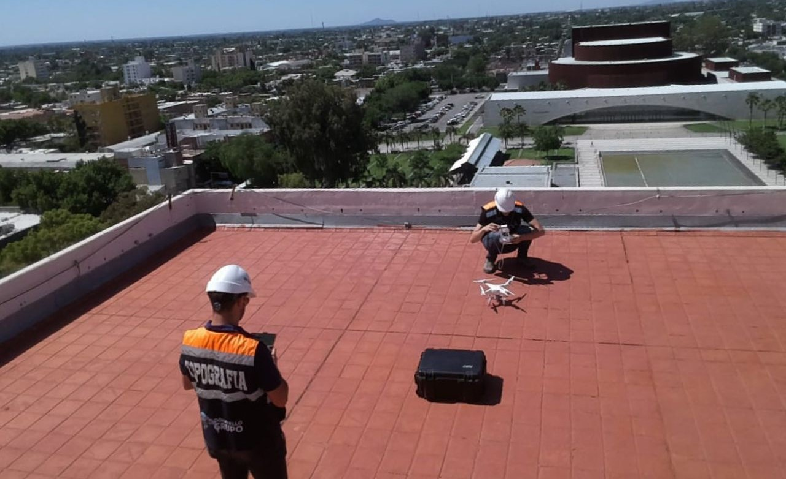
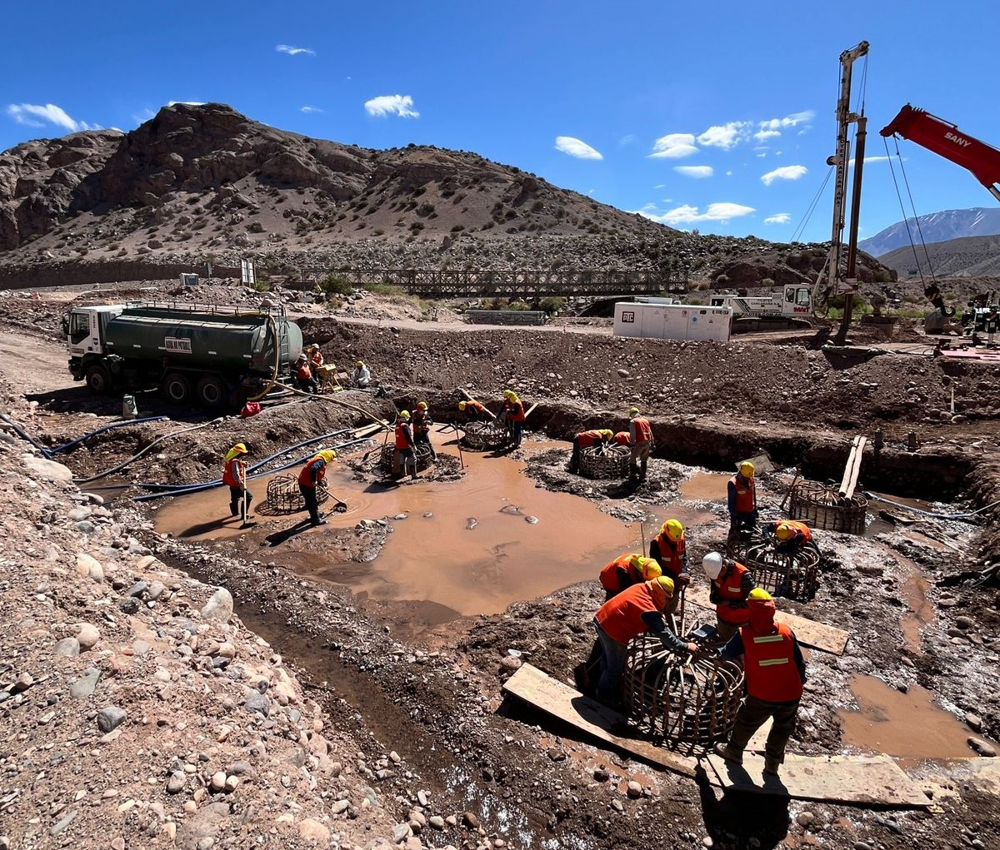

Somos referentes en servicios de topografía y construcción, reconocidos por nuestra precisión, calidad y compromiso con la excelencia. Con una sólida trayectoria en importantes proyectos mineros en San Juan, como Veladero y actualmente en Proyecto Pachón, nos especializamos en ofrecer soluciones integrales para obras civiles e infraestructura.


Además, contamos con un equipo multidisciplinario y tecnología de vanguardia que nos permite abordar cada proyecto con un enfoque integral. Desde relevamientos topográficos hasta supervisión de obra, nuestra prioridad es garantizar la eficiencia, seguridad y sostenibilidad en cada etapa del desarrollo.
Ofrecemos servicios topográficos avanzados, garantizando precisión milimétrica para minería, obras civiles y proyectos en alta montaña.
Creamos redes de puntos fijos de alta precisión, esenciales para replanteos de lotes, movimientos de suelos y ejecución de obras civiles.
Creamos soluciones integrales para montaje estructural e ingeniería, adaptadas a las condiciones más desafiantes en alta montaña.
Realizamos estudios topográficos y análisis de pendientes para optimizar el diseño de plantas industriales y el manejo eficiente del agua.
Planificamos y ejecutamos obras civiles con estándares de calidad, optimizando tiempos y costos para proyectos mineros e industriales.
Utilizamos drones y tecnología GPS avanzada para relevamientos lineales rápidos y precisos, ideales para grandes infraestructuras.

Este sistema de tuberías y conductos, diseñado para transportar fluidos de manera
eficiente y segura, cumple un rol fundamental en el funcionamiento de los procesos mineros.
La topografía juega un papel clave en la determinación precisa de la ubicación y pendiente del Piping.

Para este desafío, empleamos un Dron Phantom 4 Pro y un GNSS Multifrecuencia. Con
estas herramientas, creamos un ortomosaico con una resolución de píxel de 2.5 cm.
Nos sentimos profundamente orgullosos de contribuir a este proyecto.

Este importante proyecto representó una nueva etapa en nuestra trayectoria.
La construcción de estos puentes tuvo una importancia crucial para la infraestructura de la región.